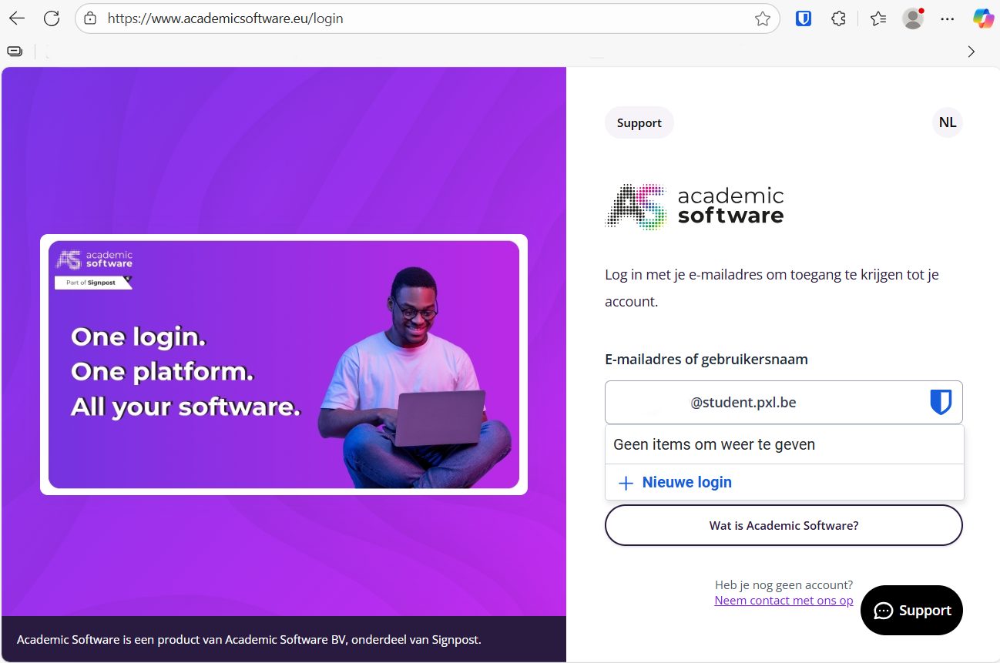
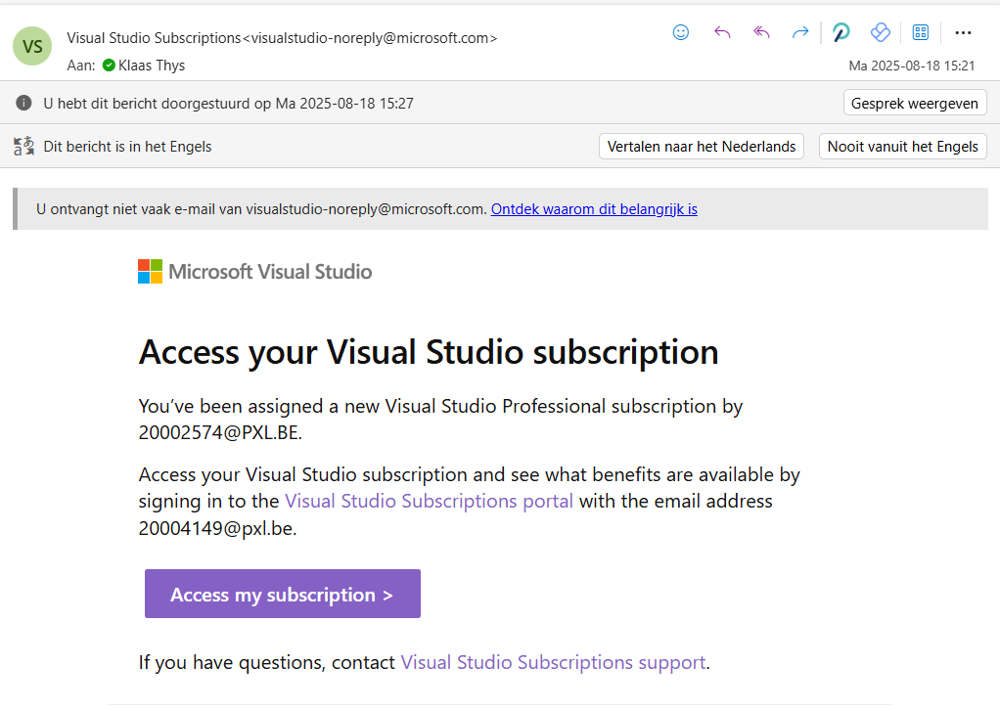
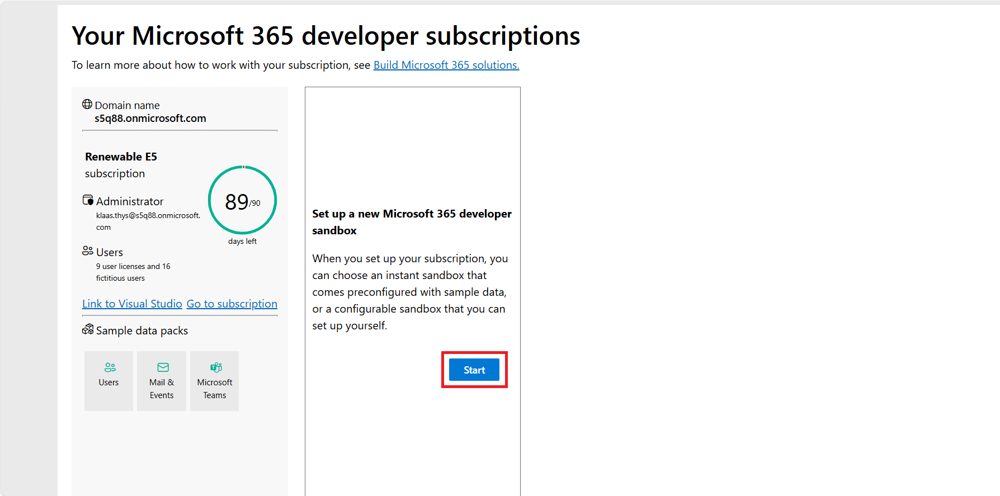
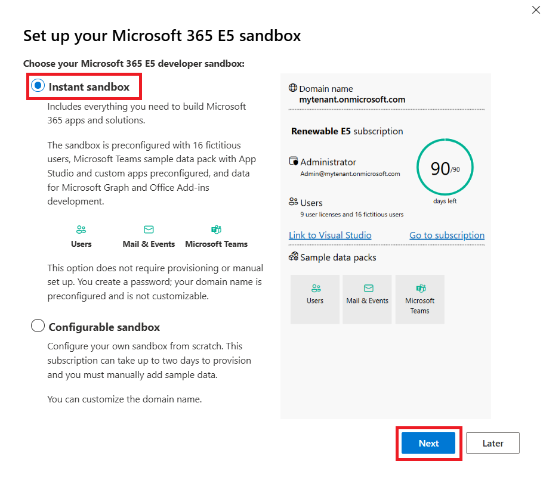
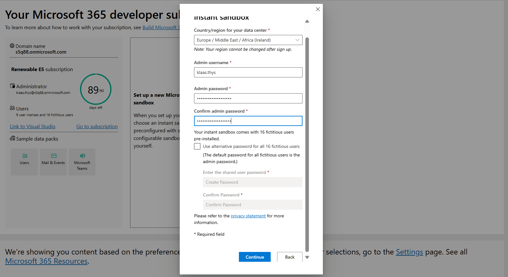
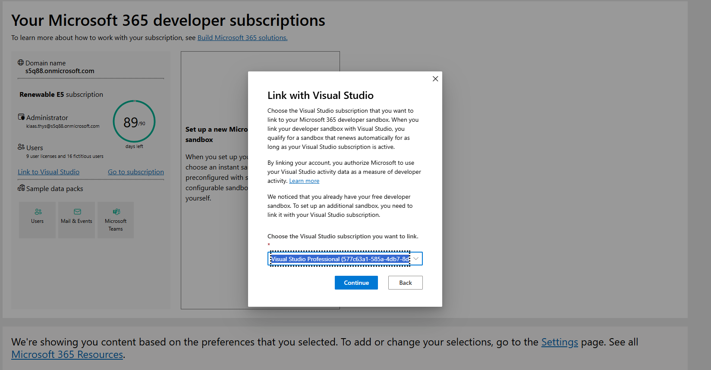
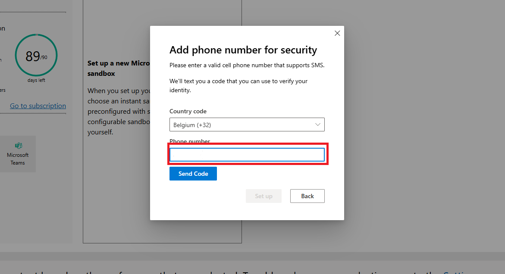

Microsoft Visual Studio Pro
Om aan alle lessen, labo's en evaluaties te kunnen deelnemen, heb je een Visual Studio Pro-licentie nodig. Deze licentie is verplicht voor deze cursus en moet je individueel aankopen via Academic Software.
1. De licentie aankopen via Academic Software
1.1. Website
- Ga naar academicsoftware.eu/login
- Geef je PXL-e-mailadres in (je e-mailadres in het formaat xxxxxx@student.pxl.be)
- Ga vervolgens verder met aanmelden via je PXL-e-mailaccount.

1.2. Academic Software-portaal
- Je bent nu op het Academic Software-portaal. Klik op de startpagina van Academic Software op "Alle tonen".

1.3. Winkelmandje voor Visual Studio Pro
- Klik op "Toevoegen aan winkelmandje" bij het product "Visual Studio Subscriptions".

Doorloop de overige stappen om de aankoop van Visual Studio Pro af te ronden.
2. Licentie voor Visual Studio Pro aanvragen
2.1. Academic Software
- Ga naar https://www.academicsoftware.eu/
- Meld je indien nodig aan met je account studentnummer@student.pxl.be.
2.2. Software
- Klik na het aanmelden bovenaan de pagina op “Software”.
- Scroll naar beneden tot je de tegel “Visual Studio Pro” vindt en klik erop.
2.3. Licentie aanvragen
- Klik op de volgende pagina onderaan op de knop “Licentie verkrijgen”.
- Je ontvangt binnen twee werkdagen een e-mail met verdere instructies (in de praktijk duurt dit meestal slechts ongeveer 10 minuten).
- Zodra je de e-mail hebt ontvangen, ga je verder met onderstaande stappen.
3. Microsoft 365-omgeving aanvragen
Zodra je de e-mail over Microsoft Visual Studio Pro hebt ontvangen, kan je verdergaan met onderstaande stappen.
3.1. E-mail
- Nadat je de Visual Studio Pro-licentie via Academic Software hebt aangekocht, ontvang je een e-mail.
- Klik in die e-mail op de knop “Access My Subscription”.

Je kan ook rechtstreeks naar de Visual Studio-omgeving navigeren via de volgende link: https://my.visualstudio.com
3.2. Overzicht van het Visual Studio-abonnement
Je bevindt je nu op het Visual Studio-platform, waar je een overzicht ziet van alle voordelen van je abonnement. Voor de lessen Windows Essentials gebruiken we enkel de Microsoft 365 Developer Subscription E5.
- Klik onder de titel “Microsoft 365 - Developer Subscription” op de blauwe knop “Activate”.

3.3. Microsoft 365 Developer-sandbox instellen
- Klik onder “Set up a new Microsoft 365 developer sandbox” op de knop “Start”.

3.4. Instant Sandbox
- Selecteer de optie “Instant Sandbox” en klik vervolgens op “Next”.

3.5. Aanmeldgegevens
- Selecteer Europe/Middle East/Africa als regio.
- Geef een admin-gebruikersnaam in met het formaat voornaam.achternaam.
- Stel een wachtwoord in en bewaar het zorgvuldig.
- Klik op “Continue”.
Bewaar je gebruikersnaam en wachtwoord op een veilige plaats; je hebt ze bij elke les nodig.

3.6. Het abonnement selecteren
- Selecteer in de vervolgkeuzelijst het enige Visual Studio Professional subscription.
- Klik op “Continue”.

3.7. Het Microsoft 365-abonnement activeren
Om te bevestigen dat een echt persoon dit abonnement aanvraagt, moet je het activeren via sms:
- Geef je gsm-nummer in (zonder de voorloopnul).
- Klik op “Send”. Geef daarna de code in die je via sms ontvangt.

4. Microsoft 365-aanmeldgegevens
Nadat je bovenstaande stappen hebt doorlopen, kan je je gebruikersnaam en de domeinnaam van je tenant altijd opvragen via de volgende link: https://developer.microsoft.com/en-us/microsoft-365/profile?source=visualstudio